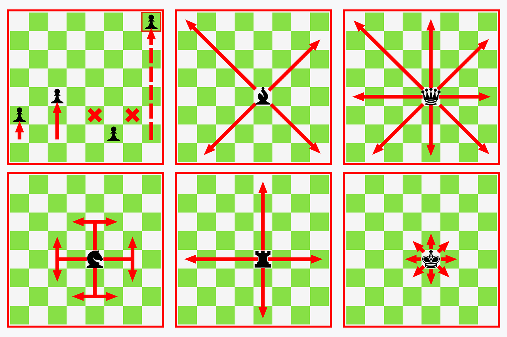

Šah
Šah je igra koja se igra na ploči s 64 kvadrata raspoređenih u osam redova i osam kolona. Svaki igrač ima 16 figura koje koristi za napad i obranu: kralja, kraljicu, dva lovca, dva konja, dva topa i osam pješaka. Cilj igre je uhvatiti protivnikovog kralja, pri čemu se igrači izmjenjuju u potezima. Potezi se izvode naizmjence, a igrači se obično dogovore tko će igrati bijelim figurama, a tko crnim figurama. Bijeli igrač obično započinje igru pomjeranjem jednog od svojih pješaka za dva polja prema naprijed. Potom crni igrač izvodi svoj potez, nakon čega igrači izmjenjuju poteze sve do kraja igre. Šah je igra koja zahtijeva veliku količinu razmišljanja i strategije. Igrači moraju predvidjeti poteze protivnika i planirati svoje poteze u skladu s tim. Šah se često igra kao natjecateljski sport, a postoji i međunarodna organizacija koja regulira pravila igre i organizira turnire. Šah nije samo zabavna igra, već ima i mnoge prednosti za mozak. Igranje šaha poboljšava kognitivne sposobnosti poput koncentracije, memorije, analitičkog razmišljanja i planiranja. Zbog toga se šah često preporučuje kao igra za djecu i odrasle.

Svaka figura ima određeni način kretanja. Pješak se kreće samo unaprijed, osim u prvom potezu kada može krenuti za dva polja. Kralj se kreće u bilo kojem smjeru za jedno polje, dok se kraljica može kretati u bilo kojem smjeru i bilo koliko polja. Top se kreće samo po linijama na kojima stoji, dok se lovac kreće po dijagonalama. Konj se kreće u slovu L, tj. dva polja u jednom smjeru, a zatim jedno polje u smjeru koji je okomito na prethodni smjer. Cilj igre je uhvatiti protivnikovog kralja. Kada se kralj nađe pod napadom, igrač mora izvršiti potez kojim će kralja zaštititi ili izvesti potez kojim će kralja odvesti na sigurno mjesto. Ako igrač ne može napraviti nijedan legalan potez koji bi zaštitio njegovog kralja, igra se završava i igrač koji je napao kralja pobjeđuje.
